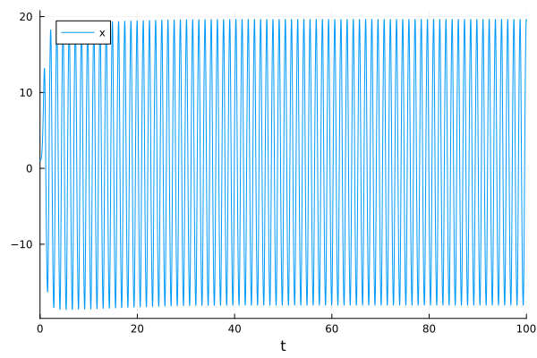

Using the SciML Symbolic Indexing Interface
This tutorial will cover ways to use the symbolic indexing interface for types that implement it. SciML's core types (problems, solutions, and iterator (integrator) types) all support this symbolic indexing interface which allows for domain-specific interfaces (such as ModelingToolkit, Catalyst, etc.) to seamlessly blend their symbolic languages with the types obtained from SciML. Other tutorials will focus on how users can make use of the interface for their own DSL, this tutorial will simply focus on what the user experience looks like for DSL which have set it up.
We recommend any DSL implementing the symbolic indexing interface to link to this tutorial as a full description of the functionality.
While this tutorial focuses on demonstrating the symbolic indexing interface for ODEs, note that the same functionality works across all of the other problem types, such as optimization problems, nonlinear problems, nonlinear solutions, etc.
Symbolic Indexing of Differential Equation Solutions
Consider the following example:
using ModelingToolkit, OrdinaryDiffEq, SymbolicIndexingInterface, Plots
using ModelingToolkit: t_nounits as t, D_nounits as D
@parameters σ ρ β
@variables x(t) y(t) z(t) w(t)
eqs = [D(D(x)) ~ σ * (y - x),
D(y) ~ x * (ρ - z) - y,
D(z) ~ x * y - β * z,
w ~ x + y + z]
@mtkbuild sys = ODESystem(eqs, t)Model sys:
Equations (4):
4 standard: see equations(sys)
Unknowns (4): see unknowns(sys)
z(t)
y(t)
x(t)
xˍt(t)
Parameters (3): see parameters(sys)
σ
ρ
β
Observed (1): see observed(sys)The system has 4 state variables, 3 parameters, and one observed variable:
ModelingToolkit.observed(sys)1-element Vector{Symbolics.Equation}:
w(t) ~ x(t) + y(t) + z(t)Solving the system,
u0 = [D(x) => 2.0,
x => 1.0,
y => 0.0,
z => 0.0]
p = [σ => 28.0,
ρ => 10.0,
β => 8 / 3]
tspan = (0.0, 100.0)
prob = ODEProblem(sys, u0, tspan, p, jac = true)
sol = solve(prob, Tsit5())retcode: Success
Interpolation: specialized 4th order "free" interpolation
t: 1494-element Vector{Float64}:
0.0
0.00014131524176735154
0.004778721545020543
0.022159690319306518
0.05525601618358923
0.09784139368267847
0.1452038587838211
0.19853285793144815
0.264925315029135
0.34144897725872575
⋮
99.5050685965187
99.57672130016113
99.64290103962468
99.72173429635731
99.79974024614526
99.86807606019184
99.93311346400752
99.99020380690412
100.0
u: 1494-element Vector{Vector{Float64}}:
[0.0, 0.0, 1.0, 2.0]
[9.986094350108765e-8, 0.0014132521265988688, 1.0002823510089436, 1.9960454103704428]
[0.00011458068293521198, 0.04789599356321014, 1.0092418334934046, 1.8687724828586638]
[0.002486588530366989, 0.22353322016904476, 1.0378609428346608, 1.4363105838315817]
[0.015528657321658519, 0.5603845898091084, 1.074417379369898, 0.8192055729263777]
[0.04806749252060168, 0.9894231794219145, 1.0996540186540003, 0.4463604511469239]
[0.1030532156887389, 1.4534572109598818, 1.122011112619132, 0.5954369920575169]
[0.18707066211045628, 1.9635799230584456, 1.173219630437304, 1.4393050408170127]
[0.33066645528234584, 2.6140131690953696, 1.328182154109618, 3.3822068610102645]
[0.5881353892118337, 3.4751773477444035, 1.706125765231091, 6.667786652573044]
⋮
[6.377998039101031, 0.22319411828541258, -10.921010618377947, 80.19626368513464]
[5.714426439478489, -1.9435115853328477, -4.580905363709074, 93.91126197168767]
[4.966589185846694, -2.212884210003531, 1.6531204454383401, 92.47052877453132]
[3.6720085396047644, 0.2736946150879965, 8.448761198014187, 78.3437758321674]
[5.364597382489192, 5.207888362498333, 13.834327682101014, 59.619883137366635]
[10.92303076840309, 6.848720973658244, 17.32776127843899, 42.06608315113445]
[14.710142737105414, 2.561461514908415, 19.336066008356244, 17.746357364155212]
[12.635789552891453, -1.9987154926094308, 19.49627690902618, -13.425206151081575]
[11.8936986279064, -2.40884594514266, 19.335747214662092, -19.360104456325107]We can obtain the timeseries of any time-dependent variable using getindex
sol[x]1494-element Vector{Float64}:
1.0
1.0002823510089436
1.0092418334934046
1.0378609428346608
1.074417379369898
1.0996540186540003
1.122011112619132
1.173219630437304
1.328182154109618
1.706125765231091
⋮
-10.921010618377947
-4.580905363709074
1.6531204454383401
8.448761198014187
13.834327682101014
17.32776127843899
19.336066008356244
19.49627690902618
19.335747214662092This also works for arrays or tuples of variables, including observed quantities and independent variables, for interpolating solutions, and plotting:
sol[[x, y]]1494-element Vector{Vector{Float64}}:
[1.0, 0.0]
[1.0002823510089436, 0.0014132521265988688]
[1.0092418334934046, 0.04789599356321014]
[1.0378609428346608, 0.22353322016904476]
[1.074417379369898, 0.5603845898091084]
[1.0996540186540003, 0.9894231794219145]
[1.122011112619132, 1.4534572109598818]
[1.173219630437304, 1.9635799230584456]
[1.328182154109618, 2.6140131690953696]
[1.706125765231091, 3.4751773477444035]
⋮
[-10.921010618377947, 0.22319411828541258]
[-4.580905363709074, -1.9435115853328477]
[1.6531204454383401, -2.212884210003531]
[8.448761198014187, 0.2736946150879965]
[13.834327682101014, 5.207888362498333]
[17.32776127843899, 6.848720973658244]
[19.336066008356244, 2.561461514908415]
[19.49627690902618, -1.9987154926094308]
[19.335747214662092, -2.40884594514266]sol[(t, w)]1494-element Vector{Tuple{Float64, Float64}}:
(0.0, 1.0)
(0.00014131524176735154, 1.001695702996486)
(0.004778721545020543, 1.05725240773955)
(0.022159690319306518, 1.2638807515340726)
(0.05525601618358923, 1.6503306265006648)
(0.09784139368267847, 2.1371446905965166)
(0.1452038587838211, 2.6785215392677526)
(0.19853285793144815, 3.323870215606206)
(0.264925315029135, 4.272861778487334)
(0.34144897725872575, 5.769438502187328)
⋮
(99.5050685965187, -4.319818460991503)
(99.57672130016113, -0.809990509563433)
(99.64290103962468, 4.4068254212815035)
(99.72173429635731, 12.39446435270695)
(99.79974024614526, 24.40681342708854)
(99.86807606019184, 35.099513020500325)
(99.93311346400752, 36.60767026037007)
(99.99020380690412, 30.1333509693082)
(100.0, 28.820599897425833)sol(1.3, idxs=x)-7.739520236255565sol(1.3, idxs=[x, w])2-element Vector{Float64}:
-7.739520236255565
-5.731026359053964sol(1.3, idxs=[:y, :z])2-element Vector{Float64}:
-1.6881032610933466
3.6965971382949476plot(sol, idxs=x)
If necessary, Symbols can be used to refer to variables. This is only valid for symbolic variables for which hasname returns true. The Symbol used must match the one returned by getname for the variable.
hasname(x)truegetname(x):xsol[(:x, :w)]1494-element Vector{Tuple{Float64, Float64}}:
(1.0, 1.0)
(1.0002823510089436, 1.001695702996486)
(1.0092418334934046, 1.05725240773955)
(1.0378609428346608, 1.2638807515340726)
(1.074417379369898, 1.6503306265006648)
(1.0996540186540003, 2.1371446905965166)
(1.122011112619132, 2.6785215392677526)
(1.173219630437304, 3.323870215606206)
(1.328182154109618, 4.272861778487334)
(1.706125765231091, 5.769438502187328)
⋮
(-10.921010618377947, -4.319818460991503)
(-4.580905363709074, -0.809990509563433)
(1.6531204454383401, 4.4068254212815035)
(8.448761198014187, 12.39446435270695)
(13.834327682101014, 24.40681342708854)
(17.32776127843899, 35.099513020500325)
(19.336066008356244, 36.60767026037007)
(19.49627690902618, 30.1333509693082)
(19.335747214662092, 28.820599897425833)Note how when indexing with an array, the returned type is a Vector{Array{Float64}}, and when using a Tuple, the returned type is Vector{Tuple{Float64, Float64}}. To obtain the value of all state variables, we can use the shorthand:
sol[solvedvariables] # equivalent to sol[variable_symbols(sol)]1494-element Vector{Vector{Float64}}:
[0.0, 0.0, 1.0, 2.0]
[9.986094350108765e-8, 0.0014132521265988688, 1.0002823510089436, 1.9960454103704428]
[0.00011458068293521198, 0.04789599356321014, 1.0092418334934046, 1.8687724828586638]
[0.002486588530366989, 0.22353322016904476, 1.0378609428346608, 1.4363105838315817]
[0.015528657321658519, 0.5603845898091084, 1.074417379369898, 0.8192055729263777]
[0.04806749252060168, 0.9894231794219145, 1.0996540186540003, 0.4463604511469239]
[0.1030532156887389, 1.4534572109598818, 1.122011112619132, 0.5954369920575169]
[0.18707066211045628, 1.9635799230584456, 1.173219630437304, 1.4393050408170127]
[0.33066645528234584, 2.6140131690953696, 1.328182154109618, 3.3822068610102645]
[0.5881353892118337, 3.4751773477444035, 1.706125765231091, 6.667786652573044]
⋮
[6.377998039101031, 0.22319411828541258, -10.921010618377947, 80.19626368513464]
[5.714426439478489, -1.9435115853328477, -4.580905363709074, 93.91126197168767]
[4.966589185846694, -2.212884210003531, 1.6531204454383401, 92.47052877453132]
[3.6720085396047644, 0.2736946150879965, 8.448761198014187, 78.3437758321674]
[5.364597382489192, 5.207888362498333, 13.834327682101014, 59.619883137366635]
[10.92303076840309, 6.848720973658244, 17.32776127843899, 42.06608315113445]
[14.710142737105414, 2.561461514908415, 19.336066008356244, 17.746357364155212]
[12.635789552891453, -1.9987154926094308, 19.49627690902618, -13.425206151081575]
[11.8936986279064, -2.40884594514266, 19.335747214662092, -19.360104456325107]This does not include the observed variable w. To include observed variables in the output, the following shorthand is used:
sol[allvariables] # equivalent to sol[all_variable_symbols(sol)]1494-element Vector{Vector{Float64}}:
[0.0, 0.0, 1.0, 2.0, 1.0]
[9.986094350108765e-8, 0.0014132521265988688, 1.0002823510089436, 1.9960454103704428, 1.001695702996486]
[0.00011458068293521198, 0.04789599356321014, 1.0092418334934046, 1.8687724828586638, 1.05725240773955]
[0.002486588530366989, 0.22353322016904476, 1.0378609428346608, 1.4363105838315817, 1.2638807515340726]
[0.015528657321658519, 0.5603845898091084, 1.074417379369898, 0.8192055729263777, 1.6503306265006648]
[0.04806749252060168, 0.9894231794219145, 1.0996540186540003, 0.4463604511469239, 2.1371446905965166]
[0.1030532156887389, 1.4534572109598818, 1.122011112619132, 0.5954369920575169, 2.6785215392677526]
[0.18707066211045628, 1.9635799230584456, 1.173219630437304, 1.4393050408170127, 3.323870215606206]
[0.33066645528234584, 2.6140131690953696, 1.328182154109618, 3.3822068610102645, 4.272861778487334]
[0.5881353892118337, 3.4751773477444035, 1.706125765231091, 6.667786652573044, 5.769438502187328]
⋮
[6.377998039101031, 0.22319411828541258, -10.921010618377947, 80.19626368513464, -4.319818460991503]
[5.714426439478489, -1.9435115853328477, -4.580905363709074, 93.91126197168767, -0.809990509563433]
[4.966589185846694, -2.212884210003531, 1.6531204454383401, 92.47052877453132, 4.4068254212815035]
[3.6720085396047644, 0.2736946150879965, 8.448761198014187, 78.3437758321674, 12.39446435270695]
[5.364597382489192, 5.207888362498333, 13.834327682101014, 59.619883137366635, 24.40681342708854]
[10.92303076840309, 6.848720973658244, 17.32776127843899, 42.06608315113445, 35.099513020500325]
[14.710142737105414, 2.561461514908415, 19.336066008356244, 17.746357364155212, 36.60767026037007]
[12.635789552891453, -1.9987154926094308, 19.49627690902618, -13.425206151081575, 30.1333509693082]
[11.8936986279064, -2.40884594514266, 19.335747214662092, -19.360104456325107, 28.820599897425833]Evaluating expressions
getsym also generates functions for expressions if the object passed to it supports observed. For example:
getsym(prob, x + y + z)(prob)1.0To evaluate this function using values other than the ones contained in prob, we need an object that supports state_values, parameter_values, current_time. SymbolicIndexingInterface provides the ProblemState type, which has trivial implementations of the above functions. We can thus do:
temp_state = ProblemState(; u = [0.1, 0.2, 0.3, 0.4], p = parameter_values(prob))
getsym(prob, x + y + z)(temp_state)0.6000000000000001Note that providing all of the state vector, parameter object and time may not be necessary if the function generated by observed does not access them. ModelingToolkit.jl generates functions that access the parameters regardless of whether they are used in the expression, and thus it needs to be provided to the ProblemState.
Parameter Indexing: Getting and Setting Parameter Values
Parameters cannot be obtained using the sol[x] syntax described above, and instead require using getp and setp.
The reason why parameters use a separate syntax is to be able to ensure type stability of the sol[x] indexing. Without separating the parameter indexing, the return type of symbolic indexing could be anything a parameter can be, which is general is not the same type as state variables!
σ_getter = getp(sys, σ)
σ_getter(sol) # can also pass `prob`28.0Note that this also supports arrays/tuples of parameter symbols:
σ_ρ_getter = getp(sys, (σ, ρ))
σ_ρ_getter(sol)(28.0, 10.0)Now suppose the system has to be solved with a different value of the parameter β.
β_setter = setp(sys, β)
β_setter(prob, 3)The updated parameter values can be checked using parameter_values.
parameter_values(prob)ModelingToolkitBase.MTKParameters{Vector{Float64}, Vector{Float64}, Tuple{}, Tuple{}, Tuple{}, Tuple{}}([28.0, 10.0, 3.0], [2.0, 1.0, 0.0, 0.0, 0.0, 0.0, 0.0, 0.0, 0.0], (), (), (), ())When solving the new system, note that the parameter getter functions still work on the new solution object.
sol2 = solve(prob, Tsit5())
σ_getter(sol)28.0σ_ρ_getter(sol)(28.0, 10.0)To set the entire parameter vector at once, setp can be used (note that the order of symbols passed to setp must match the order of values in the array).
setp(prob, parameter_symbols(prob))(prob, [29.0, 11.0, 2.5])
parameter_values(prob)ModelingToolkitBase.MTKParameters{Vector{Float64}, Vector{Float64}, Tuple{}, Tuple{}, Tuple{}, Tuple{}}([29.0, 11.0, 2.5], [2.0, 1.0, 0.0, 0.0, 0.0, 0.0, 0.0, 0.0, 0.0], (), (), (), ())These getters and setters generate high-performance functions for the specific chosen symbols or collection of symbols. Caching the getter/setter function and reusing it on other problem/solution instances can be the key to achieving good performance. Note that this caching is allowed only when the symbolic system is unchanged (it's fine for the numerical values to have changed, but not the underlying equations).
Re-creating a buffer
To re-create a buffer (of unknowns or parameters) use remake_buffer. This allows changing the type of values in the buffer (for example, changing the value of a parameter from Float64 to Float32).
remake_buffer(sys, prob.p, Dict(σ => 1f0, ρ => 2f0, β => 3f0))ModelingToolkitBase.MTKParameters{Vector{Float32}, Vector{Float64}, Tuple{}, Tuple{}, Tuple{}, Tuple{}}(Float32[1.0, 2.0, 3.0], [2.0, 1.0, 0.0, 0.0, 0.0, 0.0, 0.0, 0.0, 0.0], (), (), (), ())